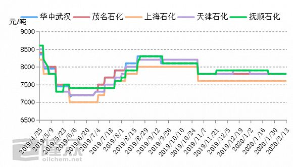

上海抗“疫”一声令下，连做豆腐的都撸起了袖子
原文链接 备份链接 澎湃新闻记者 邹娟 2月14日，生产豆腐起家的清美集团，辟出两条生产线，生产口罩。日产20万只，除了自用，其他都供政府调配。 2月13日，上汽通用五菱生产的第一批口罩批量出货。从想法提出到第一批口罩下线，仅用时3天。 …
图片来源：视觉中国
记者：彭强
“
口罩生产后要经历解析消毒的标准流程，这需要耗时七天至半个月不等。
”
根据工信部官微信息显示，中国生产口罩的速度已经很快，0.5秒就能生产一只。那为什么口罩供应依旧紧张？
随着公众对口罩产业的关注，环氧乙烷等化学名词进入了大家的视野。这一物质直接影响到医用口罩的供应。
环氧乙烷是乙烯工业衍生物中的重要有机化工产品，通常由乙烯和纯氧在纯银催化下反应生成，被广泛应用在洗涤、制药和印染等行业，是目前最好的冷消毒剂之一。医用口罩一般使用环氧乙烷进行灭菌。
但环氧乙烷是一种有毒致癌物质。口罩灭菌后，表面残留的环氧乙烷，需要通过解析的方式释放，达到安全含量的标准并质检合格后，才能出厂上市，这拉长了口罩进入市场的时间。
2月8日，在回应为何中国口罩生产速度快却仍面临紧缺的情况时，工信部在官方微博中指出，口罩生产后要经历解析消毒的标准流程，这需要耗时七天至半个月不等。
除口罩外，医用绷带、缝线、手术器具以及诸多不耐高温仍需消毒的物品，都使用环氧乙烷来消毒。
新型冠状肺炎疫情之下，口罩等医疗器材需求猛增，消毒剂环氧乙烷的用量也随之增长。那该产品的供需情况如何，价格是否会出现上涨？
联创统计数据显示，目前国内环氧乙烷的总体产能约470万吨，中石化下属炼化企业是主要生产商，还有部分产能较大的民营企业，包括三江化工、泰兴金燕和江苏斯尔邦等。
由于环氧乙烷易燃易爆和不耐长途运输的特性，该产品还具有很强的地域性。从地区看，主要产能聚集在华东地区。
金联创分析师赵鹏翡对界面新闻记者表示，环氧乙烷用于一次性使用的无菌医疗消毒器械灭菌剂的用量十分有限，用量占比不足2%；生产聚羧酸减水剂单体的用量占比超50%，其次是用于表面活性剂、乙醇胺系列、聚醚等物的生产，总计占比约48%。
由于占比较小，医疗耗材需求量的上升，对原材料价格的抬升十分有限。环氧乙烷的价格一直在低位稳定徘徊。
隆众资讯统计数据显示，环氧乙烷的市场价格自去年11月以来一直较为稳定，华南、华东和华北等市场多保持吨价7600-7800元左右。

主要生产商的环氧乙烷价格变动。图片来源：隆众资讯
疫情对于环氧乙烷需求的拉动不明显，但交通运输受阻让环氧乙烷产业原料进不来、产品出不去。
隆众资讯指出，本周内，环氧乙烷市场供应与需求均保持冷淡态势，多地装置低负荷运行，华东、华北、华中等地共五套环氧乙烷装置停产，包括燕山石化、中沙石化和武汉石化等。
赵鹏翡表示，目前环氧乙烷下游产业及终端复工进程缓慢，物流暂未畅通，整体产业链供需仍然不畅，节后东北地区的环氧乙烷价格还出现小部分下降。
这也与口罩的另一项基础原材料——聚丙烯的市场行情类似。口罩需求的增长，难以对聚丙烯整体供需情况产生明显冲击，聚丙烯价格持续处于下滑态势。
未经授权 禁止转载

原文链接 备份链接 澎湃新闻记者 邹娟 2月14日，生产豆腐起家的清美集团，辟出两条生产线，生产口罩。日产20万只，除了自用，其他都供政府调配。 2月13日，上汽通用五菱生产的第一批口罩批量出货。从想法提出到第一批口罩下线，仅用时3天。 …
原文链接 备份链接 【财新网】（记者 黎柳茜）全国各地“一罩难求”，制造口罩的设备也成了紧俏货。 以往冷门的口罩机，如今是重要的防疫物资。据《南方日报》报道，2月12日，四家口罩生产企业获得广东省财政奖励金189.7万元。 早前2 …
原文链接 备份链接 封面报道之产业篇： 荆门：消毒剂企业难复工 | 神农架：10名患者现林区 | 十堰：“东风城”亟待开工 1月3日新冠肺炎确诊患者44例的时候，湖北仙桃市口罩厂的老板李力总觉得会有事发生。此前，他已经在网上看到非典在武汉 …
原文链接 备份链接 经济观察报 记者 于惠如 深圳报道 2月12日晚7点58分，桌上的手机开始震动，李娜从沙发上坐直，拿过手机关掉闹钟，开始登陆穗康小程序，随后的十几分钟她一直盯着手机，不断刷新页面。8点10分，她叹了口气，放下手机。“预 …
原文链接 备份链接 来源：图虫 记者：卢奕贝 编辑：牙韩翔 “ 疫情影响之下全球防护设备，尤其是口罩供不应求。这让所有口罩生产商的工厂都开始忙碌起来。 ” 一家名为Kolmi Hopen的公司突然收到了一大笔订单——5亿个口罩。 这家位于 …